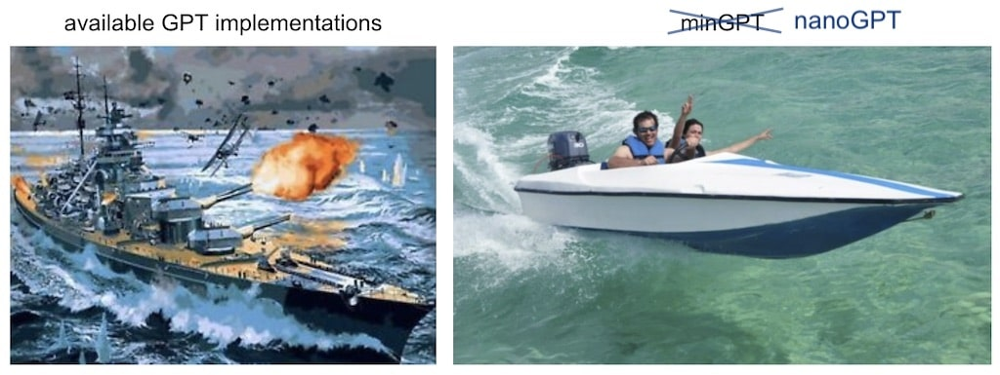
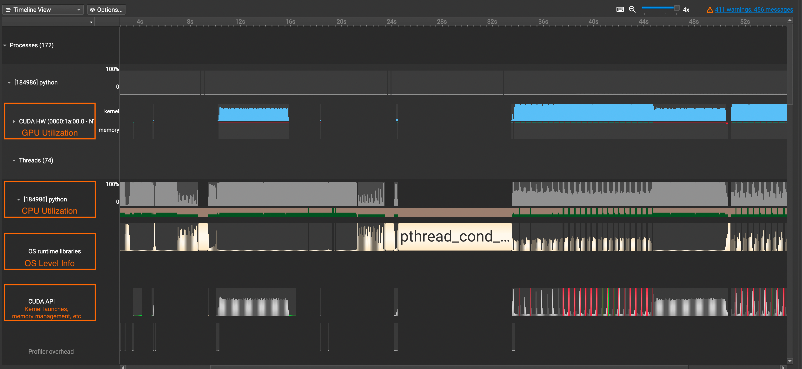

I had my first experience with optimization this summer by making my lab's codebase for protein structure estimation 70% faster(not by lowering precision of course). And Nsight Systems was at the core of making that possible.
This guide is meant to be a practical tutorial on using Nsight Systems. Nsight Systems has become a core part of my work process that I use not only to profile code, but also to understand code yet the first time I used this tool I was lost on how to use it.
Q. Why Nsight Systems over other profilers?
There are many amazing profilers out there and it's up to personal preference, but here's my reasons for picking Nsight Systems over other famous ones like the PyTorch Profiler.
- Non-Intrusive
- No need to change the original code for profiling purposes.
- Just run
nsys profile python train.py - Less Overhead
- To start viewing your profiled results, you just have to run the profiling command, download output file, and open in Nsight Systems.
- In PyTorch Profiler, for example, you'd have to set up TensorBoard or a chrome trace to get a visualizer going.
- Granular Trace Information
- Shows both GPU & CPU usage, CUDA API Calls, and memory usage
- Shows CUDA kernel calls with the grid sizes and block sizes for corresponding kernels
- Framework Agnostic
- (disclaimer: Given that you have a nvidia gpu)
- Can profile any frameworks you use(e.g. JAX), while PyTorch Profiler is limited to PyTorch
If I have convinced you to use Nsight Systems, let's dive into a practical guide on how to use this tool.
I always learn best when I see concrete examples I can follow, so I will walk you through an example case of using Nsight Systems on Karpathy's nanoGPT repo. Our task is to use this tool to profile and identify potential opportunities for optimization.
Part 1: Profiling
Nsight systems profiling command is extremely simple:
nsys profile python [INPUT_FILENAME]
That's it!
But don't run this just yet, we have to add some flags for making the most out of our profiling:
--trace=cuda,nvtx,osrt- Here's what each option captures:
cuda: CUDA API Calls/CUDA kernels informationnvtx(NVIDIA Tools Extension): Custom annotations which show up in the visualizerosrt(Operations Systems Runtime): Any communications with hardware, multi-threading synchronizations, and kernel schedulers
-o [OUTPUT_FILENAME]- Custom output filename
Here's the final template:
nsys profile --trace=cuda,nvtx,osrt -o [OUTPUT_FILENAME] python [INPUT_FILENAME]
Let's tweak this to fit out nanoGPT train.py:
nsys profile --trace=cuda,nvtx,osrt -o nanoGPT_prof python train.py config/train_shakespeare_char.py
Note: You can stop profiling anytime with ^c.
Part 2: Understanding Nsight Systems Basics
After you're done with profiling nsys has generated me nanoGPT_prof.nsys-rep. Let's open this up in NVIDIA Nsight Systems.
A lot of information just popped up in front of us. Let's break it down by each row.
CUDA HW: Shows GPU Utilization Ratepython(Names will vary): Shows CPU Utilization RateOS runtime libraries: Especially useful for viewing thread activities(e.g. synchronizations, semaphores, etc)CUDA API: Shows CUDA API Calls
If you want to see detailed information about CUDA Kernel calls, click the CUDA HW dropdown and see the Kernels row. It contains information about grid sizes, block sizes, registers per thread, and such which is useful for calculating the occupancy of SMs.
Part 3: Using NVTX to Add Annotations to Your Code
A profiler isn't complete unless we can map which parts in the trace belong to the which parts in our code. We can use nvtx.annotate to accomplish this.
I said earlier how Nsight Systems is non-intrusive, but this is not true if we want to unlock the custom annotating feature(sorry!) We need to put the parts in our interest within the loop of
with nvtx.annotate("YOUR_COMMENT_HERE"). Let's see an example below of a simple training run with minibatches:
import nvtx
...
with nvtx.annotate("training"): # add nvtx annotations like this
for epoch in range(num_epochs):
...
with nvtx.annotate("single epoch training"):
for batch_idx, (data, targets) in enumerate(train_loader):
...
with nvtx.annotate("forward"):
outputs = model(data)
with nvtx.annotate("calculate loss"):
loss = criterion(outputs, targets)
...I've added such NVTX annotations for our nanoGPT code and re-ran the profiling. Here is our updated result.

We now see our annotations showing up in blue in the NVTX row. This is great! We can now map the code with the trace much easily.
Q. Wait, why isn't our forward and backward above not using any GPUs?
When I first got the profiled results, I was confused on why the first pass of forward and backward calls were not utilizing the GPU and why they were taking so long. I thought it was a small mistake on my end or with the code.
When I went and did some digging, I realized this is a property of torch.compile! torch.compile will compile the model into optimized kernels as it executes, so naturally it will take much longer during the first run than the rest.
In fact, here is demo run comparing the speed of eager mode vs torch.compile from the PyTorch docs:
eager train time 0: 0.21844583129882814
eager train time 1: 0.04933529663085937
eager train time 2: 0.04745318222045898
eager train time 3: 0.04743577575683594
eager train time 4: 0.04739583969116211
eager train time 5: 0.04778604888916015
eager train time 6: 0.04729548645019531
eager train time 7: 0.04731391906738281
eager train time 8: 0.047341567993164066
eager train time 9: 0.04735078430175781
~~~~~~~~~~
compile train time 0: 227.8810625 //<- first run takes longest
compile train time 1: 9.108693359375 //<- second run takes long too
compile train time 2: 0.027546623229980468 //<- from third run and onwards it's ~half the time of eager mode
compile train time 3: 0.02345062446594238
compile train time 4: 0.02182655906677246
compile train time 5: 0.021774335861206053
compile train time 6: 0.021820415496826173
compile train time 7: 0.02229145622253418
compile train time 8: 0.021850112915039063
compile train time 9: 0.021827583312988282
~~~~~~~~~~
(train) eager median: 0.047415807723999025, compile median: 0.02207078456878662, speedup: 2.1483517079431937x
~~~~~~~~~~Whereas the classic eager mode outputs CUDA kernels, torch.compile outputs triton kernels, which is why we see many triton kernel launches in our Nsight Systems too.
torch.compile is still a new, evolving feature in PyTorch. And given the complexity of creating a general compiler for optimizing all sorts of models across different architectures, it may exhibit unexpected behavior as of now. If you're interested in using it, take a look at this guide that people are building.
Part 4: How Profiles Help You Understand Your Code
Diving into torch.compile is just one example of how profiling helps you understand what goes on under the hood in your code. Details I would have overlooked get revealed while exploring the profiled results. Here's a list of cases on how it helps me:
- Practice Building Intuition on Code Performance
- Some parts of the code I thought would take a long time end up taking much less, and vice versa. Having profiles ready gives me a structured setting where I can practice reducing this discrepancy.
- Maximizing Time Spent Writing Effective Solutions
- Optimization is most effective when you choose the right part to optimize. And profiling helps you set priorities on how you should spend your time to maximize results.
- Understanding code flow through visualization
- Navigating large codebases take much less time.
- You create an internal representation of realizing which parts are more important than others.
Closing Thoughts
After profiling, however, is where the real work starts. You should first identify which category of bottleneck your program is facing out of these:
1. GPU Compute Bound
2. CUDA API Bound
3. Synchronization Bound
4. CPU Compute Bound
Here's an excellent guide by Paul Bridger that walks you through this. It includes potential approaches you should take depending on your bottleneck type as well.
My lab's codebase was suffering from a CUDA API Bound due to inefficient batching. I originally joined to work in modeling BioML models, but optimizing it was much more fun and opened up a whole new world to me.
Thinking about how to use GPUs better led me to GPU Programming at first, and now more towards the systems side of ML. Read more about my shift here if you're interested!
References
[1] Andrej Karpathy, nanoGPT Github Repo
[2] PyTorch torch.compile Docs
[3] Paul Bridger, Solving Machine Learning Performance Anti-Patterns: a Systematic Approach